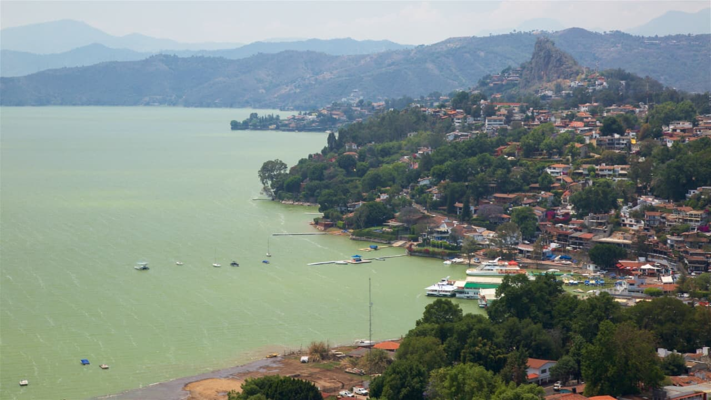
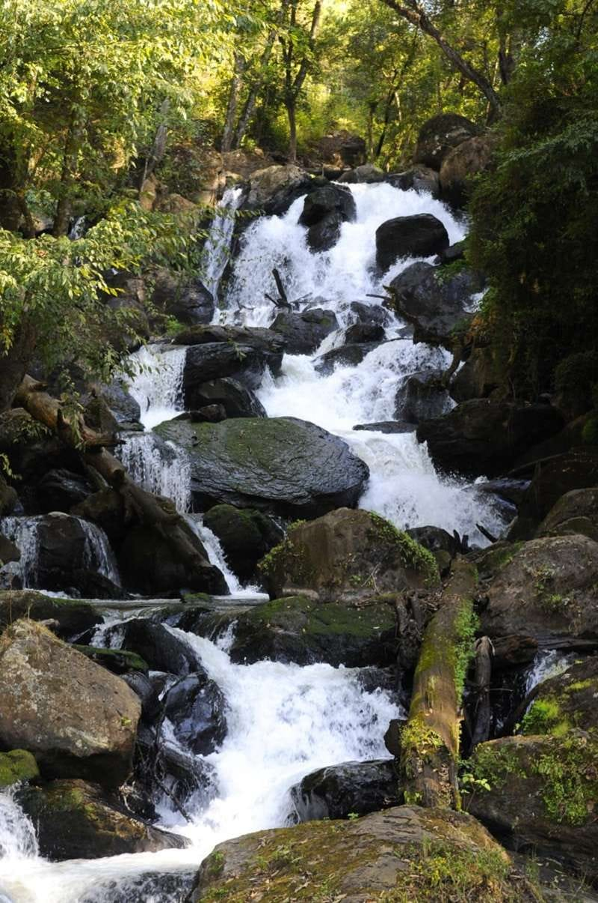
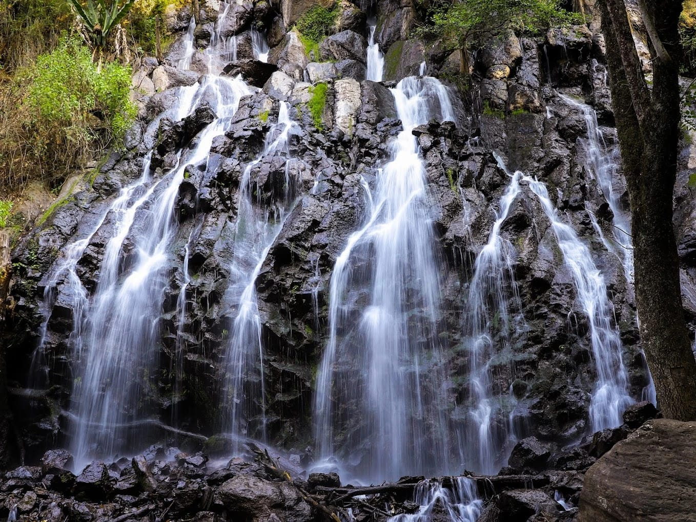

La laguna de Valle de Bravo, también conocida como presa Miguel Alemán, es el corazón turístico del Pueblo Mágico en el Estado de México. Es famosa por sus deportes acuáticos, paseos en lancha y veleros, vuelos en parapente y la cercanía a los santuarios de la mariposa monarca entre noviembre y marzo.
Actividades en la laguna Deportes acuáticos: vela (Valle es considerado la capital de la vela en México), esquí acuático, wakeboard, kayak y paddle board. Paseos en lancha o yate: ideales para admirar el mirador de La Peña y las montañas boscosas que rodean el lago. Pesca recreativa: disponible en embarcaciones pequeñas
Aventuras aéreas Parapente y ala delta: Valle de Bravo es uno de los mejores lugares del mundo para volar gracias a sus vientos. Sitios de despegue: Monte Alto y La Torre. Costo aproximado: $2,100 MXN o $3,000 MXN por vuelo tándem dependiendo de la empresa, duracion y servicios incluidos.

La Cascada El Molino en Valle de Bravo es uno de los atractivos naturales más visitados de Avándaro, ideal para senderismo, fotografía y descanso en medio de bosques de pinos y oyameles. Se recomienda visitarla en temporada de lluvias (junio-septiembre) para apreciar su máximo esplendor.
Información General
Ubicación: Avándaro, Valle de Bravo, Estado de México. Acceso: Carretera Valle de Bravo–Avándaro, a unos 5.6 km del centro de Valle de Bravo. Horario: Abierto todos los días de 8:00 a 18:00 hrs. Tiempo de recorrido: Aproximadamente 1.5–2 horas caminando por senderos y escalinatas.
Actividades recomendadas
Senderismo: Recorrer los 5.6 km de ruta con desnivel de 192 m. Picnic: Áreas designadas para comer al aire libre. Fotografía: Ideal para capturar paisajes y flora silvestre. Nado en pozas: Experiencia refrescante en temporada cálida. Visita cultural: Comprar artesanías mazahuas como recuerdo.

La Cascada Velo de Novia en Valle de Bravo es un atractivo natural que ofrece una experiencia única combinando naturaleza, historia y aventura. La cascada, que tiene una caída de aproximadamente 35 metros, se encuentra dentro del Parque Natural Velo de Novia, un bosque de pino y oyamel. La cascada es famosa por su forma que recuerda un velo de novia, lo que ha llevado a la localidad a llamarla así. Además, hay una leyenda que dice que una joven se arrojó al abismo en este lugar como símbolo de su dolor por un amor no correspondido. La cascada es accesible desde la Ciudad de México o Toluca y ofrece actividades como senderismo, paseos a caballo, rapel en cascada y pícnic en familia. El parque cuenta con servicios como asadores, estacionamiento, cabañas, renta de caballos, miradores, venta de artesanías y antojitos.
